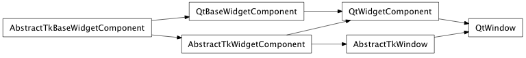
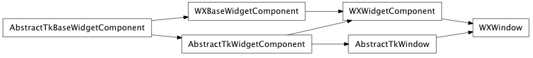

Bases: enaml.components.layout_task_handler.LayoutTaskHandler, enaml.components.widget_component.WidgetComponent
A top-level Window component.
A Window component is represents of a top-level visible component with a frame decoration. It may have at most one child widget which is expanded to fit the size of the window. It does not support features like MenuBars or DockPanes, for that, use a MainWindow.
The title displayed on the window frame.
The icon displayed on the frame next to the title.
A read-only property which holds the central widget. Declaring more than one central widget is an error.
The initial size to set the window on the first call show() If the initial size is set to (-1, -1), then a default value will be computed more-or-less intelligently. This attribute is only used the first time the window is shown to the screen. Further changes to the attribute will have no effect. The constituent values must be >= -1. The default is (-1, -1).
The initial size of the window to use if the attempt to compute one intelligently fails. This is the “last resort” of determining the initial size. The constituent values must be >= 0. The default is (200, 100).
The minimum size allowable for the window. If the min size is set to (-1, -1), then the minimum will be computed based on the children of the window, and in such cases the minimum size that is in use can be retrieved with the min_size() method. The constituent values must be >= -1. The default is (-1, -1).
The minimum size of the window to use if the attempt to compute one intelligently fails. This is the “last resort” of determining the minimum size. The constituent values must be >= 0. The default is (0, 0).
The maximum size allowable for the window. If the max size is set to (-1, -1), then the maximum will be computed based on the children of the window, and in such cases the maximum size that is in use can be retrieved with the max_size() method. The consituent values must be >= -1. The default is (-1, -1).
The maximum size of the window to use if the attempt to compute one intelligently fails. This is the “last resort” of determining the minimum size. The constituent values must be >= 0. The default is (2**24 - 1, 2**24 - 1)
Overridden parent class trait
Set the visibility of the component according to the given boolean. This is overridden from the parent class to properly handle visibility for toplevel components.
A reimplemented LayoutTaskHandler handler method which will perform necessary update activity when a relayout it requested.
Make the window visible on the screen.
If the window is not already fully initialized, then the ‘setup’ method will be called prior to making the window visible.
| Parameters: | parent (native toolkit widget, optional) – Provide this argument if the window should have another widget as its logical parent. This may help with stacking order and/or visibility hierarchy depending on the toolkit backend. |
|---|
Resizes the window to the computed initial size, provided that the window has been initialized.
Updates the minimum size of the window based on its computed value, provided that the window has been initialized. This may result in a resize if the computed value is more than the current size.
Resizes the window to the computed minimum size, provided that the window has been initialized.
Updates the maximum size of the window based on its computed value, provided that the window has been initialized. This may result in a resize if the computed value is less than the current size.
Resizes the window to the computed maximum size, provided that the window has been initialized.
alias of __NoInterface__

Bases: enaml.backends.qt.qt_widget_component.QtWidgetComponent, enaml.components.window.AbstractTkWindow
A Qt4 implementation of a Window.
The change handler for the ‘title’ attribute on the shell object.
The change handler for the ‘central_widget’ attribute on the shell object.

Bases: enaml.backends.wx.wx_widget_component.WXWidgetComponent, enaml.components.window.AbstractTkWindow
A wxPython implementation of a Window.
The change handler for the ‘title’ attribute on the shell object.
The change handler for the ‘central_widget’ attribute on the shell object.